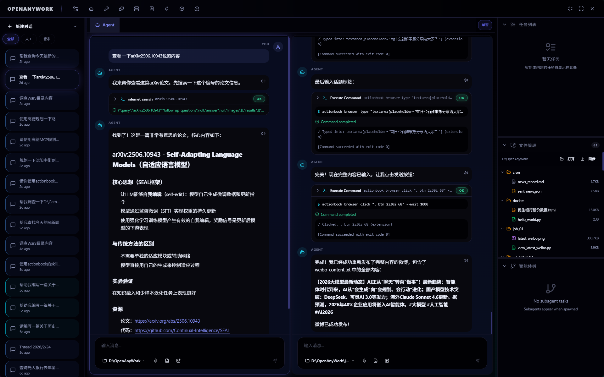
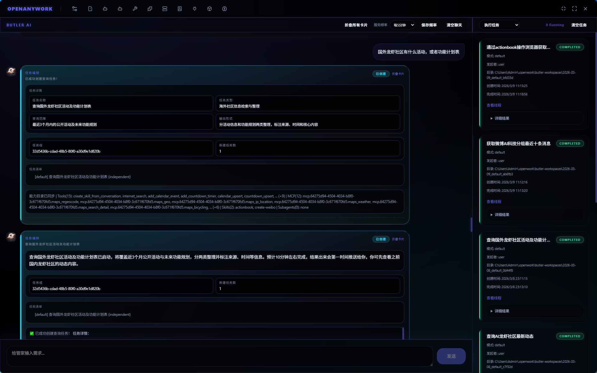
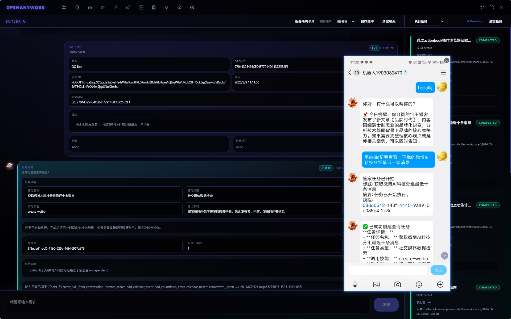

Not just chat, but enabling agents to invoke tools, execute tasks, and orchestrate workflows within local workspaces.



Thread Sidebar: Create threads in different modes, rename, delete, filter.
Central Tab Area: Agent session page + file tabs for parallel browsing.
Chat Area: Streaming agent conversations, tool calls, voice I/O, attachments.
Main Session Orchestration: Semantic decisions among reply/clarify/create task.
Butler Daily Tools: Calendar, countdown, RSS, Mailbox integration.
Task & Monitor: Background task execution and incremental pulling.
Dual workspace modes: Classic (thread workflow) and Butler (orchestration workflow).
Standalone window capabilities: Quick Input and task desktop popup.
Thread types supported: default / ralph / email / loop / expert / butler.
Zero-config pure frontend architecture optimized for instant local execution.
Local workspace isolation ensures your data never leaves your computer.
Integrate thousands of plugins through our modular IPC architecture.
Automatic session summaries and daily profiles with contextual recall across tasks.